目次
ウェブサイトの名前を設定する
ウェブサイトのロゴ画像を設定する
ウェブサイトの説明文を設定する
ウェブサイトのキーワードを設定する
広告やアクセス解析のコードを設置する
内容を編集する
個別ページを追加する
個別ページのデータを編集する
ウェブサイトを新規作成する
データを開く
データを上書き保存する
データを名前を付けて保存する
ウェブサイトの名前を設定する
ウェブサイトの名前を設定します。
ここで設定した名前は、ヘッダーの他、タイトルバーにも表記されます。
個別ページの名前は別に設定できるため、どのページにも使える名前にしておきましょう。
× 「株式会社九条システムの企業情報」 → 〇 「株式会社九条システム」
× 「かえでの自己紹介ページ」 → 〇 「かえでのホームページ」
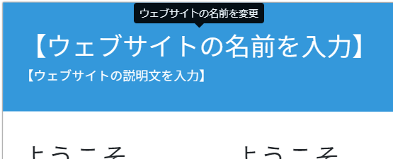
ウェブサイトの名前が書かれている部分をクリックします。
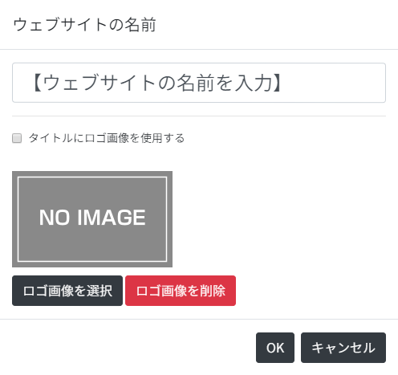
ウェブサイトの名前を入力し、「OK」をクリックします。
ウェブサイトのロゴ画像を設定する
ウェブサイトのロゴ画像を設定します。
ウェブサイトの名前が書かれている部分（または「ウェブサイト設定」メニュー → 「ウェブサイトの名前」）をクリックします。
「タイトルにロゴ画像を使用する」にチェックを入れ、「ロゴ画像を選択」をクリックします。
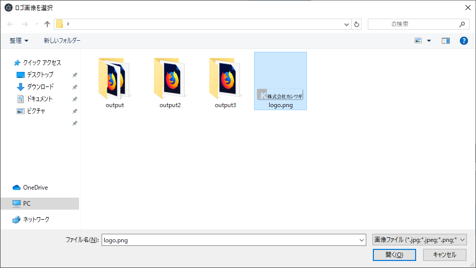
ロゴ画像を選択し、「開く」をクリックします。
ロゴ画像が読み込まれたら、「OK」をクリックします。
ウェブサイトの説明文を設定する
ウェブサイトの説明文を設定します。
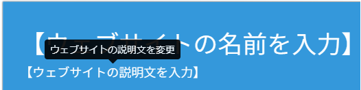
ウェブサイトの説明文が書かれている部分（または「ウェブサイト設定」メニュー → 「ウェブサイトの説明文」）をクリックします。
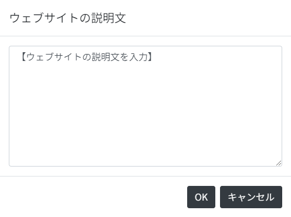
ウェブサイトの説明文を入力し、「OK」をクリックします。
ウェブサイトのフッターを設定する
ウェブサイトのフッターを設定します。
ウェブサイトのフッターが書かれている部分（または「ウェブサイト設定」メニュー → 「ウェブサイトのフッター」）をクリックします。
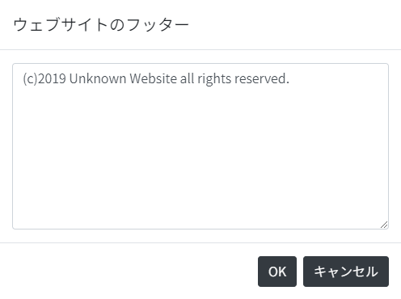
ウェブサイトのフッターを入力し、「OK」をクリックします。
ウェブサイトのキーワードを設定する
ウェブサイトのキーワードを設定します。
「ウェブサイト設定」メニュー → 「ウェブサイトのキーワード」をクリックします。
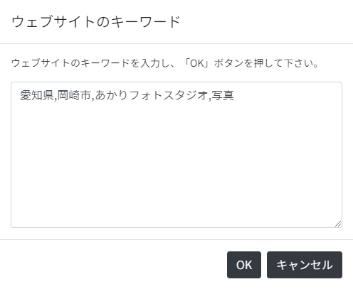
キーワードを図のようにカンマ区切りで入力し、「OK」をクリックします。
広告やアクセス解析のコードを設置する
広告やアクセス解析のコードを設置します。
「ウェブサイト設定」メニュー → 「ウェブサイトのキーワード」をクリックします。
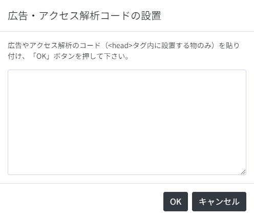
広告やアクセス解析のコードを入力し、「OK」をクリックします。
内容を編集する
個別のページの内容を編集します。
ページの本文をクリックすると編集ができるようになります。
編集を終える際は、本文以外の部分をクリックします。
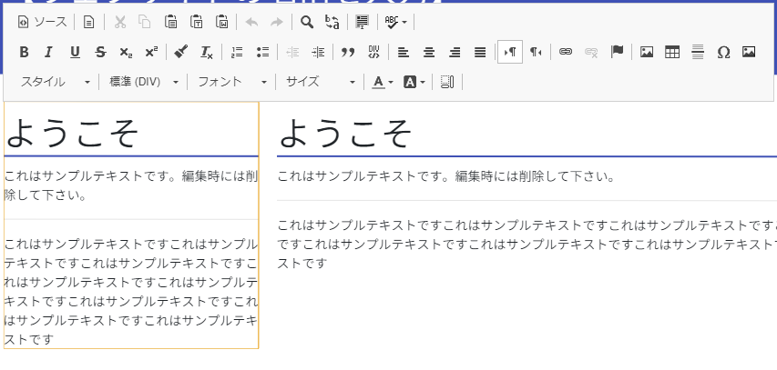
個別ページを追加する
個別のページを追加します。
画面左上「＋ ページを追加」をクリックします。
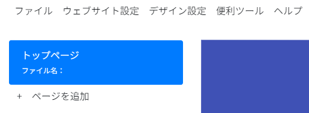
「ページの名前」：「製品情報」「プロフィール」など、ページの名前を入力します。
「ページのファイル名」：「products」「profile」など、出力時にファイル名として扱われる名前です。英数字のみで、既に存在するファイル名は使えません。空白の場合、トップページ（index.html）として扱われます。
「ページのレイアウト」：ページのカラム数（段組みの数）を指定します。「1カラム」「2カラム（左側が狭い、同じ大きさ、右側が狭い）」の4種類から選べます。
入力が終わったら、「OK」をクリックします。
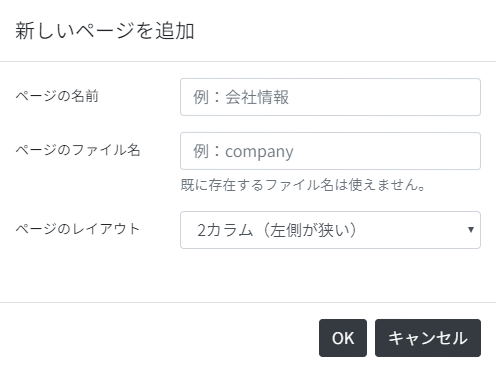
個別ページのデータを編集する
個別のページのデータを編集します。
画面右上「ページの編集」をクリックします。
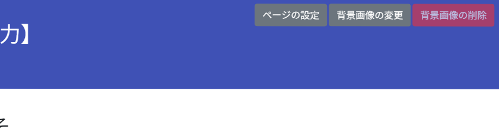
「ページの名前」：「製品情報」「プロフィール」など、ページの名前を入力します。
「ページのファイル名」：「products」「profile」など、出力時にファイル名として扱われる名前です。英数字のみで、既に存在するファイル名は使えません。空白の場合、トップページ（index.html）として扱われます。
「ページのレイアウト」：ページのカラム数（段組みの数）を指定します。「1カラム」「2カラム（左側が狭い、同じ大きさ、右側が狭い）」の4種類から選べます。
「このページを削除」：表示しているページを削除します。
入力が終わったら、「OK」をクリックします。
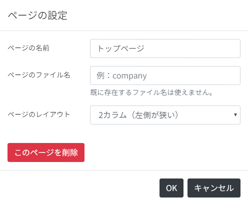
ウェブサイトを新規作成する
「ファイル」メニュー → 「新規作成」をクリックします。
確認のダイアログが表示されたら「OK」をクリックします。
編集途中のデータは破棄されます。ご注意下さい。
データを開く
「ファイル」メニュー → 「開く」をクリックします。
ファイル選択のダイアログが表示されるので、編集データ（拡張子「*.webgeki」のファイル）を選択して下さい。
編集途中のデータは破棄されます。ご注意下さい。
データを上書き保存する
「ファイル」メニュー → 「上書き保存」をクリックします。
データを名前を付けて保存する
「ファイル」メニュー → 「名前を付けて保存」をクリックします。
ダイアログが表示されるので、保存先を選択して下さい。